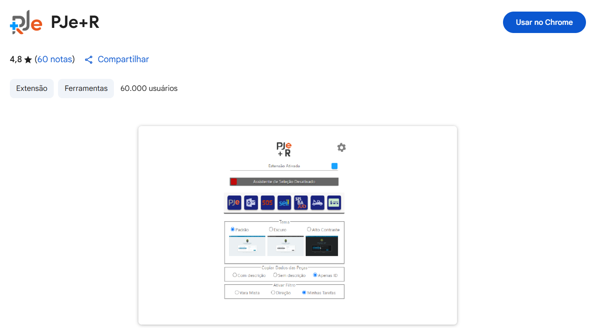

O projeto visa desenvolver e implementar uma funcionalidade de assistência no processo de agendamento de audiências no sistema PJe, centralizando e automatizando o controle das datas e horários.

Luciana Marinho de Melo
Prof. Dr. Sanderson Oliveira de Macedo
Atualmente, o sistema PJe não oferece ferramentas para o controle de datas e horários de audiências, o que exige o uso de métodos paralelos e manuais. Este projeto desenvolve uma funcionalidade integrada ao PJe+R para automatizar esse controle, facilitando a visualização de datas disponíveis para juízes titulares e substitutos, considerando feriados e recessos, com o objetivo de eliminar o retrabalho e o uso de documentos auxiliares.
Levantamento de requisitos junto aos analistas jurídicos, mapeamento dos stakeholders e planejamento geral do projeto, definindo escopo, cronograma e riscos.
Refinamento dos requisitos, criação de diagramas do sistema (UML), desenvolvimento de mockups e protótipos interativos para validação com os stakeholders.
Codificação da lógica de negócio e da interface do usuário, seguida pela integração da funcionalidade como uma extensão no sistema PJe+r.
Disponibilização de uma versão de testes para validação funcional, de usabilidade e de aceitação junto aos usuários finais e stakeholders.
Planejamento do lançamento, criação da documentação de uso para os usuários finais e acompanhamento inicial do software em produção.
O calendário exibe datas com cores distintas: verde para dias com horários vagos e vermelho para dias totalmente ocupados. Ao clicar em um dia, o usuário vê os horários disponíveis e ocupados.
Permite filtrar a visualização de datas disponíveis por Juiz Titular, Juiz Substituto ou visualizar todos, facilitando o agendamento conforme a necessidade.
O sistema gerencia automaticamente os horários de audiências canceladas, tornando-os novamente disponíveis, incluindo as reservas de margem para audiências extensas.
A funcionalidade considera automaticamente feriados, recessos forenses e dias úteis, alinhada ao calendário oficial do Tribunal Regional Federal para garantir a precisão das datas.
A implementação da assistência de agendamento visa fornecer uma visão clara do calendário forense e um controle simplificado das datas, eliminando o uso de documentos paralelos e o retrabalho. A solução foi projetada de forma desacoplada para garantir sua independência e viabilizar futuras evoluções, como um sistema próprio.